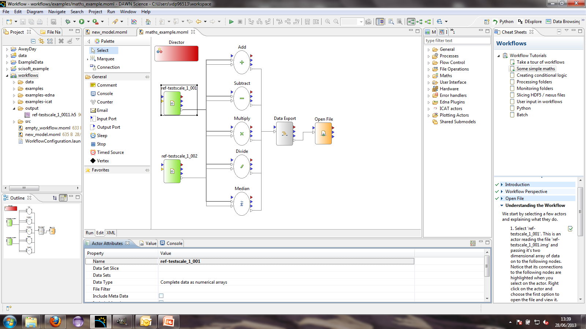
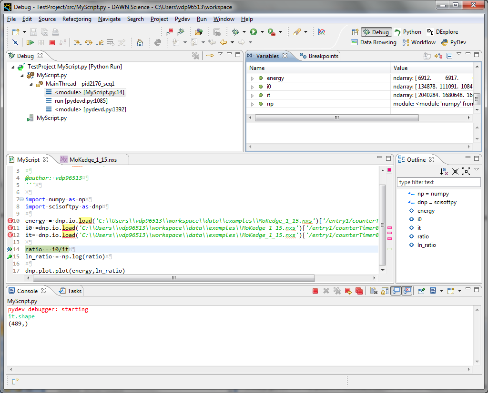

Session 4. DAWN Training - Extras
This is the final session in the DAWN Training course. By now you should be comfortable with using DAWN to view various different types of data, customising the look of plots by changing things like the title, image colour maps, trace line style, using the plotting tool system and some basic python scripting. The aim of the final session is for the trainees to bring the own data and explore it using DAWN. This tutorial sheet covers the most common "extras" in DAWN, not included in the previous sessions.
These extras include:
-
Data processing with Workflows
-
Running scripts in the Python perspective
-
Visualising multidimensional data in DExplore Hyperview
-
Creating movies from HDF5 stacks
This tutorial is not designed to be worked through in order! Pick the section you find most useful and go for it!
Workflows
Workflows are a powerful labview-esque visual programming language. There are good guides on how to use Workflows in the DAWN cheatsheets, this section of the tutorial will guide you through one of the cheatsheets, allowing the others to be explored during the class or at your leisure.
-
Open DAWN, go to the Help - > Cheatsheets and from the Cheat Sheet Selection go to Workflows and pipelines and open the Workflow and pipelinestutorials.
-
Follow the tutorial Take a Tour of Workflows which will guide you through building a simple Workflow which displays a message box, as shown below:
-
The first real introduction to the power of the Workflows system is the Some Simple Maths tutorial. This tutorial uses multiple workflow actors to load, process, export and open data.

If, after this brief introduction, the Workflows are of interest to you, carry on with the Workflow Cheatsheets. The instructors in the class will be happy to help with any problems you might have.
Running Scripts in the Python Perspective
This section is a quick guide to running scripts in the python perspective and using debug mode.
Running Scripts
The first step in running Python scripts is to open the Python Perspective, set up a new console, create a new PyDev project and you are ready to go.
-
Open DAWN, go to the Python Perspective and start a Python console (follow the steps in the last tutorial if you don't know how to do this).
-
Create a new PyDev project called MyProject and make sure Create 'src' folder and add it to the PYTHONPATH is selected.
-
Right click on the src folder and select New PyDev Module. Leave the Package name blank and call the module MyScript.
-
At the top of MyScript.py add the line import scisoftpy as dnp.
-
Open the file MoKedge_1_15.nxs by right-clicking the file and select Open With -> NeXus Data Editor.
-
Find the dataset entry1/counterTimer01/Energy and drag and drop it into the python console.
-
dnp.io.load('C:\\PATHTODAWNWORKSPACE\\data\\examples\\MoKedge_1_15.nxs')['/entry1/counterTimer01/Energy'] should now be visible in the console.
-
Change this to say energy = dnp.io.load('C:\\PATHTODAWNWORKSPACE\\data\\examples\\MoKedge_1_15.nxs')['/entry1/counterTimer01/Energy'][...] and press enter.
The scisoftpy module doesn't load nexus data until it is needed and only loads what it needs. The [...] tells it to load the complete dataset into a numpy array.
-
Do the same for the datasets I0 and It.
-
Copy these lines into the MyScript.py editor, and add the extra lines as shown below to take the log of the ratio of i0/it and plot it against energy.
import scisoftpy as dnp
import numpy as np
energy = dnp.io.load('C:\\DAWNWORKSPACELOCATION\\data\\examples\\MoKedge_1_15.nxs')['/entry1/counterTimer01/Energy'][...]
i0 =dnp.io.load('C:\\DAWNWORKSPACELOCATION\\data\\examples\\MoKedge_1_15.nxs')['/entry1/counterTimer01/I0'][...]
it= dnp.io.load('C:\\DAWNWORKSPACELOCATION\\data\\examples\\MoKedge_1_15.nxs')['/entry1/counterTimer01/It'][...]
ratio = i0/it
ln_ratio = np.log(ratio)
dnp.plot.plot(energy,ln_ratio)-
Run the script in the current console by pressing Ctrl-Alt-Enter or the toolbar button. A trace should appear in Plot 1.
If you just want to run a small section of the code, highlighting it and pressing Ctrl-Alt-Enter will send the highlighted lines to the console.
Debug Mode
Debugging allows you to stop the running of a script at specific points to check everything is proceeding as expected. This is very useful for finding the cause of incorrect output.
-
Put a breakpoint next to the line ratio = i0/it (either double-click on the grey bar on the side of the code editor next to the line or right-click and select Add Breakpoint)
-
From the Debug tool bar drop-down, select Debug As -> Python Run.
-
Say Yes to opening the Debug perspective.
The layout of DAWN will change to the debugging perspective.
-
Look at the Variables view, what does it show?
-
Type it.shape into the console and press enter, what does it show?
-
Type ratio.shape into the console and press enter, what does it show?

The variable ratio has not been created yet, the debugger stopped the script just before this line was executed.
-
Press F6 (or the step over toolbar action) to execute the line with the breakpoint.
-
Again type ratio.shape into the console and press enter, what does it show now?
The interactive console and variables view are really useful for developing scripts and fixing broken code.
Experiment with writing scripts to analyse data (either the example data or your own), the instructors in the class will be happy to help with any questions/problems you might have.
DExplore Hyper3D
Hyper3D is a view added to DExplore for visualising 3 dimensional datasets. DAWN 1.2 contains the first version with this view, included for user feedback and collecting further requirements.
The Hyper3D view was specifically designed to work with hyperspectral image datasets (stacks of images where each images corresponds to a different wavelength and a single pixel traced down the stack is a spectrum), but it also works well for other stacks of images.
-
Go the the DExplore perspective and open the example file 315029.dat.
-
Select the Pilatus dataset, and in the dataset inspector select Hyper3D from the inspector tab
-
What shape is this dataset?
-
Select eta as the trace-coord, drag the Hyper3D view to a convenient place and double click the tab to maximise the view
The two plots in this view show different sections of the 3D pilatus dataset. The image shows the dimensions perpendicular to the dimension selected as the trace-coord. The actual image shown is an integration of the image stack over the window shown in the trace plot on the right.
-
Move the region on the right hand plot, what happens to the image on the left hand plot?
The trace in the right hand plot shows the average of all the traces corresponding to the pixels selected by the box region on the image.
-
Move the region on the left hand plot, what happens to the trace on the right hand plot?
-
Add more regions to the image, using the Create New Profile toolbar action. Traces can be exported to a .dat file using the Export... toolbar action.
Experiment with your own 3D datasets (or ask for more exciting datasets), the instructors in the class will be happy to help with any questions/problems you might have.
HDF5 Stack To Movie
This section demonstrates the use of the dataset conversion wizard in DAWN to convert from a HDF5 image stack into a movie avi file.
None of the example files shipped with DAWN are suitable for this section so please use your own data or ask the instructors for an appropriate file.
-
Make sure the HDF5 file is in one of the data project folder, navigate to the file, right click and select Convert - Convert Wizard...
-
Select the conversion type video from image stack and click Next
-
Make sure the correct dataset is selected, the output file name is OK, then adjust the parameters in the advanced area to optimise the histogramming, downsampling (larger downsampling, smaller file) and frame rate.
-
Finally select the orientation of the dataset to animate through using the slicing options and click Finish.
After clicking finish a progress bar will appear on the wizard, when the wizard is finished the avi movie file should appear in the chosen output folder.

The End?
Congratulations, you have reached the end of the DAWN training sessions! You should now be familiar with most of the general data visualisation and analysis features in the current version of DAWN.
Please keep in mind these sheets for future reference, it may also be worth checking periodically for updates and new features as new versions of DAWN are released.
Thank you for participating in this training series, if you have any feedback please use the feedback form in the DAWN help menu, giving the feedback the title "Dawn Training".